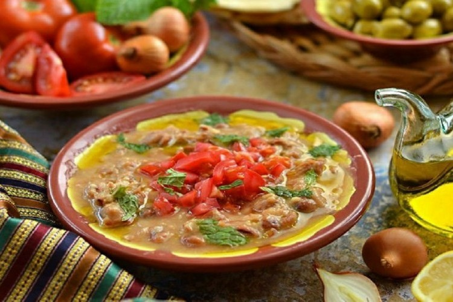

What we can do for you
About Us
Attracting tourists, coach parties and locals since 1959, Balady is an institution that can deliver a reliable, if not wildly delicious, meal with good service.
A bizarre jungle theme rules the decor, but the food is straight-down-the-line Egyptian and consistently decent, especially the fool and falafel.

Fool Haar

Alexandrian Fool

Zebda fool